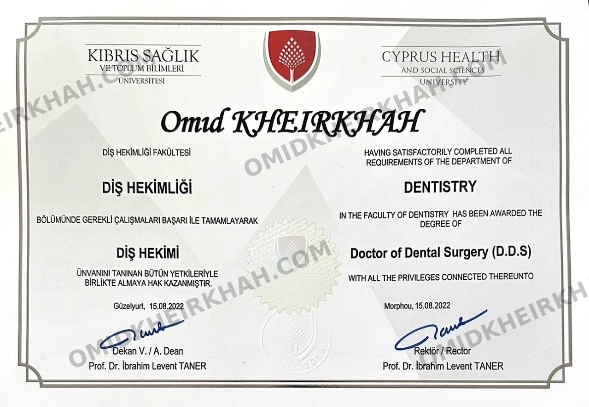
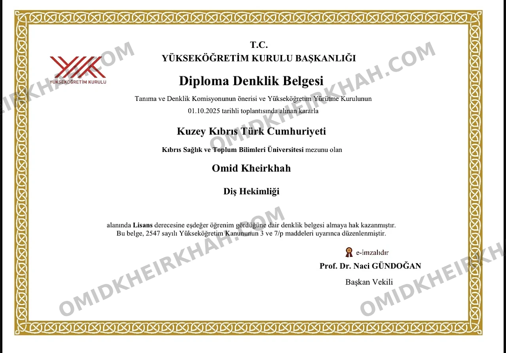
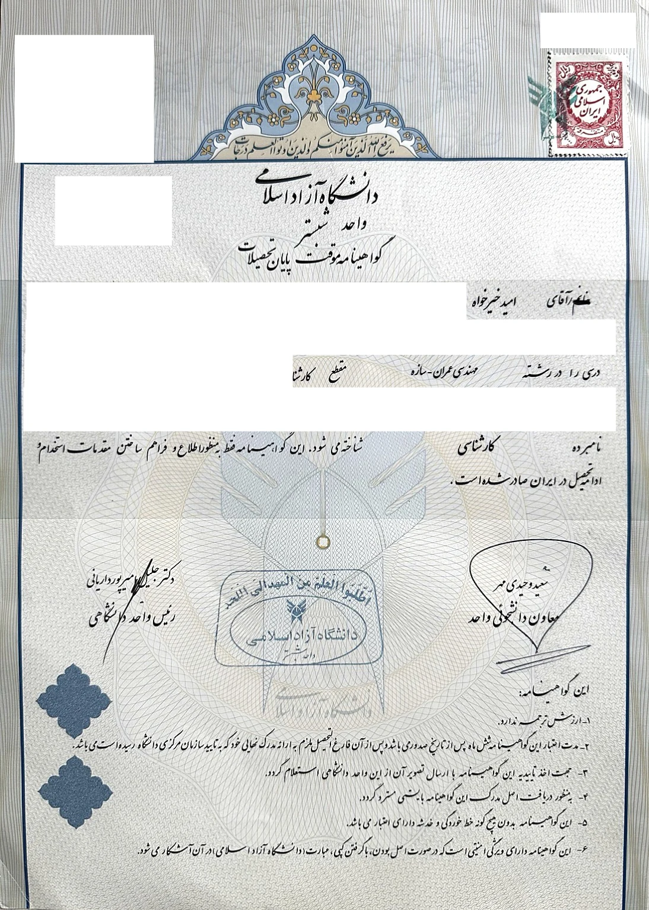
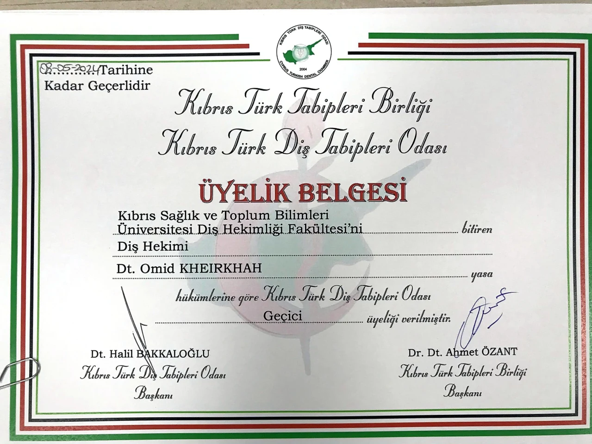
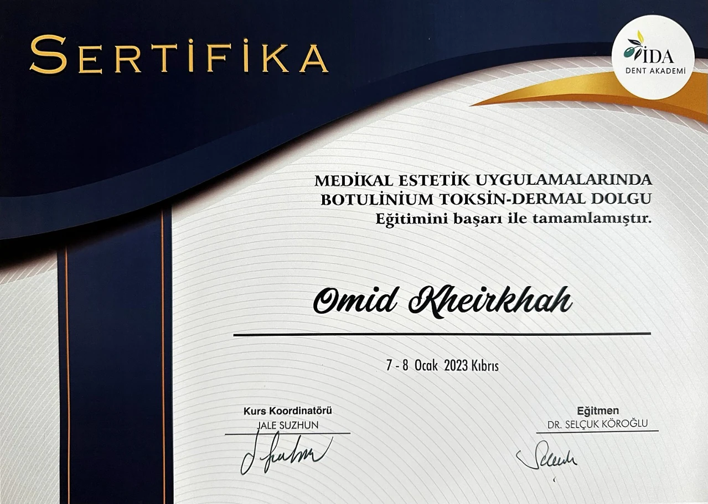
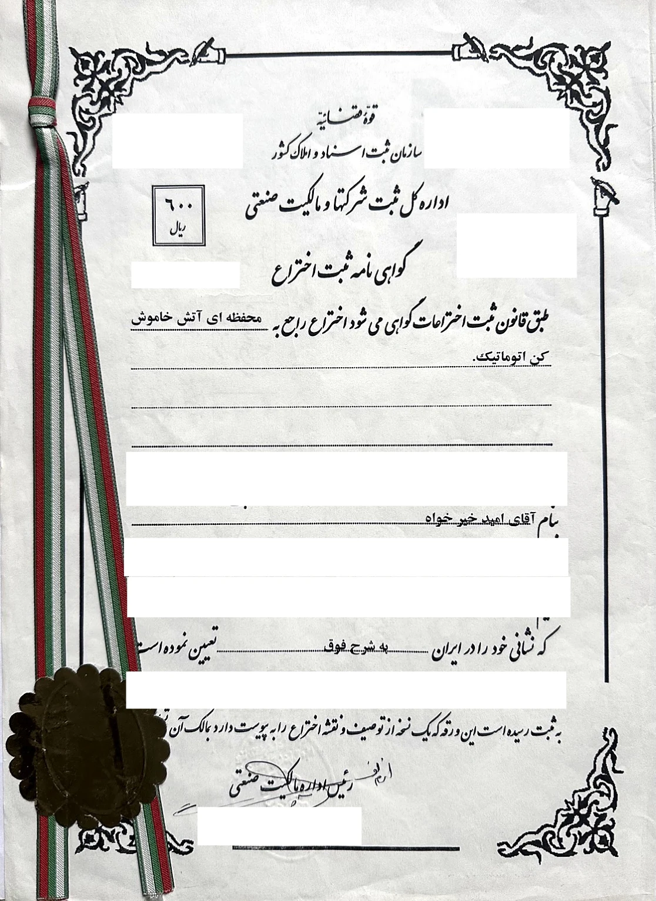

دندانپزشک · نوآور · نویسنده
به ریشه نگاه میکنم، نه به شاخه.
دندانپزشکی، مهندسی و نوآوری در ظاهر دنیاهای متفاوتیاند؛ اما همگی با یک پرسش آغاز میشوند: مسئله واقعاً از کجا ریشه میگیرد؟ اینجا آموختهها و تجربههایم را شفاف، کاربردی و مستند به اشتراک میگذارم.
چه میکنم، چطور فکر میکنم
هر کدام یک دنیای جداگانه — همگی از یک ذهن.
دندانپزشکی
پیشگیری، آموزش بیمار و سلامت دهان — با رویکرد علمی و قابل فهم
مهندسی عمران
مرور پژوهشهای مصالح هوشمند، تابآوری لرزهای و پایش سلامت سازه؛ با منابع اصلی و نگاه نقادانه
تحصیل در قبرس شمالی
اطلاعات و راهنمای انتخاب آگاهانه برای دانشجویان ایرانی — NEU، CIU و EMU
نوآوری
ایدهها و پروژههای نوآورانه، از سامانه هوشمند اطفای خودکار حریق تا کاربردهای رباتیک در دندانپزشکی
نوشتهها
مقالات دندانپزشکی، یادداشتهای علمی و دیدگاههای شخصی
بیایید با هم صحبت کنیم.
برای همکاری، پرسشهای عمومی و راهنمایی تحصیلی
دندانپزشکی، یک هنر است.
پیشگیری و تشخیص زودهنگام میتوانند از بسیاری از مشکلات دهان و دندان بکاهند. هدف من ارائه آموزش علمی، روشن و قابلفهم است.
🦷 پیشگیری
عادتهای درست روزانه و بررسی بهموقع، خطر بسیاری از بیماریهای دهان و دندان را کاهش میدهند
🔬 علمی و مستند
مطالب سلامت با اتکا به راهنماهای حرفهای و منابع علمی معتبر تهیه و بازبینی شدهاند
💡 ساده و کاربردی
پزشکی پیچیده را به زبان ساده توضیح میدهم
پژوهش، تحلیل و کاربرد
مهندسی عمران
از رفتار مصالح تا عملکرد سازه؛ مرور فارسی پژوهشها با حفظ منابع، تفکیک نوع شواهد و بیان محدودیتها.
بتنِ ذخیرهساز انرژی؛ سازهای که نقش ابرخازن دارد
این فناوری ابرخازن است، نه باتری متداول؛ نتیجهٔ جذاب آزمایشگاهی، بهتنهایی تأییدیهٔ کاربرد ساختمانی نیست.
مطالعهٔ مرور و منابع ← فناوری زیستی · دوام مصالحبتن خودترمیمشونده؛ بستهشدن ترک با بازیابی مقاومت فرق دارد
شواهد آزمایشگاهی امیدوارکنندهاند؛ عرض ترک، شرایط عملآوری و معیار اندازهگیری در تفسیر نتیجه تعیینکننده هستند.
مطالعهٔ مرور و منابع ← مهندسی زلزله · تابآوریپس از زلزله، فرونریختن کافی نیست؛ مفهوم بازیابی عملکرد
ایمنی جانی و بازگشت به خدمت، اهداف یکسانی نیستند؛ سازه، اجزای غیرسازهای و زیرساختهای پیرامونی باید با هم دیده شوند.
مطالعهٔ مرور و منابع ← ساختوساز پایدار · مصالحبتن کمکربن؛ مقایسهٔ مصالح فراتر از یک عدد
پژوهش ۲۰۲۶ نشان میدهد مقایسهٔ مصالح باید با توجه به کربن نهفته، منابع و مقیاس تولید انجام شود؛ نتیجه به فرضهای مطالعه وابسته است.
مطالعهٔ مرور و منابع ← پایش سلامت سازه · مدلسازیدوقلوی دیجیتال پل؛ از حسگر تا تصمیم مهندسی
دوقلوی دیجیتال میتواند پایش را منسجمتر کند؛ اما هشدار نرمافزار بهتنهایی اثبات خرابی یا تأیید ایمنی نیست.
مطالعهٔ مرور و منابع ←این مطالب مرور علمی و آموزشیاند، نه پژوهش اصیل این وبسایت یا دستورالعمل اجرایی پروژه. یافتهٔ آزمایشگاهی، نتیجهٔ مدل و ضابطهٔ طراحی یکسان نیستند.
تحصیل در قبرس شمالی
قبرس شمالی برای برخی دانشجویان ایرانی میتواند گزینهای قابلبررسی باشد. پیش از انتخاب، باید اعتبار دقیق رشته، هزینه نهایی، زبان آموزش و شرایط معادلسازی مدرک در کشور مقصد بررسی شود.
چرا قبرس شمالی؟
🌍 موقعیت جغرافیایی
دروازهی اروپا — در قلب مدیترانه، نزدیک به ایران
💰 هزینه معقول
شهریه و هزینه زندگی به مراتب کمتر از اروپا و کانادا
🎓 اعتبار رشتهمحور
اعتبار و معادلسازی باید برای هر دانشگاه، رشته و کشور مقصد جداگانه بررسی شود
🏠 مسیر پذیرش
شرایط پذیرش بسته به دانشگاه، رشته، مقطع و سوابق متقاضی متفاوت است
☀️ آبوهوای بهشتی
۳۰۰ روز آفتاب در سال، ساحل و کیفیت زندگی بالا
👨👩👧 جامعه ایرانی
جامعه بزرگ ایرانی در دانشگاهها و شهر
دانشگاههای برتر
بزرگترین دانشگاه قبرس شمالی
NEU دانشگاهی چندرشتهای در نیکوزیای شمالی است و بیمارستان آموزشی و طیفی از رشتههای علوم سلامت، مهندسی و علوم انسانی دارد. رتبهبندی، اعتبار حرفهای و شرایط بورسیه هر برنامه باید در زمان درخواست بررسی شود.
دانشگاه بینالمللی با محیط چندفرهنگی
CIU با محیط بینالمللی پویا و برنامههای آموزشی متنوع، گزینهای عالی برای دانشجویانی است که به دنبال تجربه جهانی هستند.
دانشگاه مدیترانه شرقی؛ باسابقه در آموزش و پژوهش
EMU بهعنوان قدیمیترین دانشگاه قبرس شمالی، دارای سابقه طولانی در تحقیقات آکادمیک و روابط بینالمللی قوی است.
راهنمایی اولیه تحصیل در قبرس شمالی
فرم کوتاه زیر را تکمیل کنید تا درخواست بررسی دانشگاه و رشته در واتساپ آماده شود. پیش از تصمیم نهایی، هزینه و اعتبار رشته را از دانشگاه و مراجع کشور مقصد استعلام کنید.
درباره من
زندگی در چند
دنیای موازی.
متولد ۱۳۷۰ در تبریز. از کودکی همین سؤال در ذهنم بود: اندیشمندان بزرگ تاریخ چطور توانستند در حوزههای کاملاً متفاوت عمیق شوند؟ با گذشت زمان فهمیدم: سیستمها هر چقدر پیچیده به نظر برسند، در اصل سادهاند.
در ۱۳۸۹ وارد رشته مهندسی عمران شدم. مهندسی تفکر تحلیلی و حل مسئله سیستماتیک را به من یاد داد. در مرحله پایاننامه کارشناسی ارشد، به صدای درونم گوش دادم و از صفر وارد دندانپزشکی شدم. دو رشته کاملاً متفاوت — اما هر دو همان سؤال را میپرسیدند: سیستمها چطور کار میکنند؟
در سال ۱۳۹۶ تحصیل دندانپزشکی را آغاز کردم و در ۱۴۰۱ فارغالتحصیل شدم. همان سال برنامه دکترا در جراحی دهان و فک و صورت را شروع کردم — که هنوز ادامه دارد.
📍 ترکیه · ایران · قبرس
مشاهدهٔ سوابق حرفهای و مدارکدکترای جراحی دهان
برنامه دکترا در قبرس شمالی. ادامه دارد.
دندانپزشکی
فارغالتحصیل دندانپزشکی. رویکرد پیشگیریمحور و آموزش بیمار.
نماینده دانشگاههای KKTC
نماینده رسمی NEU، CIU و EMU. راهنمایی صدها دانشجوی ایرانی.
مهندسی عمران
سازه و استاتیک. پایه تفکر تحلیلی.
دکتر امید خیرخواه · سوابق حرفهای
از تجربه و تخصص
تا مدارک و دستاوردها.
دندانپزشک و مهندس عمران؛ با تجربهٔ فعالیت در آموزش، بازاریابی و پروژههای میانرشتهای. اینجا مسیر تحصیلی، زمینههای همکاری و مدارک حرفهای من را در کنار هم میبینید.
تجربهٔ حرفهای
فعالیت در چند حوزهٔ مکمل
فعالیتهای تخصصی و میانرشتهای
برنامهریزی، برندینگ و طراحی خدمات؛ همکاری در پروژههای وب و نرمافزار و توسعهٔ راهکارهای دیجیتال در حوزههای سلامت، آموزش، فناوری و هوش مصنوعی.
نمایندگی دانشگاههای قبرس شمالی
بیش از شش سال تجربه در بازاریابی آموزشی، معرفی دانشگاهها، مشاورهٔ تحصیلی و هماهنگی پذیرش دانشجو؛ با سابقهٔ نمایندگی رسمی دانشگاههای NEU، EMU، CIU و KSTU.
راهنمای تحصیل در قبرس شمالی ←مسیر تحصیلی
دندانپزشکی و مهندسی عمران
دکترای حرفهای دندانپزشکی (DDS)
دانشکدهٔ دندانپزشکی دانشگاه علوم سلامت و علوم اجتماعی قبرس.
کارشناسی مهندسی عمران ـ سازه
دانشگاه آزاد اسلامی، واحد تبریز.
معادلسازی مدرک دندانپزشکی در ترکیه
گواهی معادلسازی صادرشده از شورای آموزش عالی ترکیه (YÖK).
توانمندیها
از شناخت مسئله تا اجرای پروژه
- برنامهریزی و هماهنگی پروژهها
- بازاریابی و توسعهٔ بازار
- مشاورهٔ تحصیلی و جذب دانشجو
- طراحی محصول و خدمات
- برندینگ و ارتباطات حرفهای
- راهبری پروژههای دیجیتال
- حل مسئلهٔ میانرشتهای
- نوآوری و ایدهپردازی
ارتباطات
زبانها
- فارسی
- زبان مادری
- ترکی آذربایجانی
- زبان مادری
- ترکی استانبولی
- زبان مادری
- انگلیسی
- متوسط
پشتوانهٔ این مسیر
مدارک و گواهیها
نسخههای عمومی مدارک؛ اطلاعات شخصی و شناسههای قابلپیگیری از تصاویر حذف شدهاند. برای مطالعهٔ جزئیات، تصویر هر مدرک را باز کنید.

دکترای حرفهای دندانپزشکی
دانشگاه علوم سلامت و علوم اجتماعی قبرس؛ مدرک Doctor of Dental Surgery (DDS).
مشاهدهٔ تصویر کامل
گواهی معادلسازی YÖK
صادرشده از شورای آموزش عالی ترکیه برای معادلسازی مدرک دندانپزشکی در نظام آموزش عالی این کشور.
مشاهدهٔ تصویر کامل
کارشناسی مهندسی عمران ـ سازه
دانشگاه آزاد اسلامی، واحد تبریز؛ پایهٔ دانشگاهی مسیر من در مهندسی و تحلیل سازه.
مشاهدهٔ تصویر کامل
سابقهٔ عضویت موقت حرفهای
اتاق دندانپزشکان قبرس ترک. این گواهی مربوط به سابقهٔ عضویت موقت است و تأیید عضویت یا اعتبار فعلی نیست.
مشاهدهٔ تصویر کامل
دورهٔ بوتولینوم توکسین و فیلر پوستی
گواهی پایان دورهٔ کاربرد در زیبایی پزشکی، از آکادمی دندانپزشکی İDA؛ برگزارشده در قبرس، ۷ و ۸ ژانویهٔ ۲۰۲۳.
مشاهدهٔ تصویر کامل
گواهی ثبت اختراع
«محفظهای آتشخاموشکن اتوماتیک»؛ گواهی ثبت اختراع در ایران به نام امید خیرخواه.
مشاهدهٔ تصویر کاملتماس
شما را میشنوم.
برای مشاوره دندانپزشکی، تحصیل در قبرس، همکاری و موضوعات عمومی در ارتباط باشید.
برای گفتوگوی مستقیم، واتساپ را باز کنید یا موضوع را در فرم بنویسید. ایمیل هم در دسترس است.
مقالات
همه مقالهها
مقالات سلامت دهان و مهندسی عمران؛ با منابع قابلپیگیری و توضیح محدودیت شواهد
مقالهای با این عبارت پیدا نشد.
عبارت کوتاهتری بنویسید یا دستهٔ «همه» را انتخاب کنید.
بتنِ ذخیرهساز انرژی؛ سازهای که نقش ابرخازن دارد
اگر مصالح ساختمان، علاوه بر تحمل بار، انرژی هم ذخیره کنند، مرز میان سازه و تجهیزات تغییر میکند. پژوهش کربن–سیمان این امکان را در نمونههای آزمایشی بررسی کرده است؛…
بتن خودترمیمشونده؛ بستهشدن ترک با بازیابی مقاومت فرق دارد
تصور ترمیم ترک با کمک باکتری جذاب است؛ اما نخست باید پرسید چه چیزی ترمیم شده است: ظاهر ترک، نفوذپذیری یا توان تحمل بار
پس از زلزله، فرونریختن کافی نیست؛ مفهوم بازیابی عملکرد
ساختمانی ممکن است فرونریزد، اما نتوان از آن استفاده کرد. برای بیمارستان، مدرسه یا خانه، پرسش بعدی این است: چه زمانی خدمات ضروری دوباره برقرار میشوند
بتن کمکربن؛ مقایسهٔ مصالح فراتر از یک عدد
برای انتخاب مصالح پایدار، دانستن انتشار کربن یک تن ماده کافی نیست. باید دید چه مقدار ماده برای یک عملکرد مشخص لازم است، از کجا تأمین میشود و در مقیاس موردنیاز چه…
دوقلوی دیجیتال پل؛ از حسگر تا تصمیم مهندسی
مدل سهبعدی زیبا لزوماً دوقلوی دیجیتال نیست. ارزش یک سامانهٔ پایش زمانی آشکار میشود که دادهٔ سازهٔ واقعی، مدل و تفسیر مهندسی به یکدیگر متصل باشند.
پوسیدگی دندان؛ از ارزیابی خطر تا درمان کمتهاجمی
پوسیدگی فقط یک سوراخ در دندان نیست؛ فرایندی است که به تعامل زیستلایهٔ میکروبی، رژیم غذایی، بزاق و عوامل محافظتی وابسته است. درمان مناسب نیز تنها با دیدن رنگ دندان یا…
مسواکزدن مؤثر؛ روش درست مهمتر است یا نوع مسواک؟
هدف مسواکزدن، پاکسازی منظم سطوح دندان و رساندن فلوراید است؛ نه فشار بیشتر یا خرید گرانترین وسیله. یک توصیهٔ علمی باید بین شواهد مربوط به پلاک، التهاب لثه و پیشگیری…
نخ دندان و پاکسازی بیندندانی؛ انتخاب ابزار و فهم شواهد
تمیزکردن فاصلهٔ بین دندانها فقط برای بیرونآوردن غذای گیرکرده نیست. این ناحیه محل تجمع زیستلایهٔ میکروبی است و مسواک همیشه به آن دسترسی کافی ندارد. بااینحال، توصیه…
حساسیت دندان؛ از شناخت محرک تا انتخاب درمان
درد کوتاه هنگام نوشیدن آب سرد همیشه به معنای پوسیدگی نیست، اما هر درد سردی را هم نمیتوان «حساسیت معمولی» نامید. حساسیت عاجی زمانی مطرح میشود که علتهای دیگر درد…
بیماری لثه؛ تفاوت التهاب سطحی با آسیب بافت نگهدارنده
لثهٔ سالم فقط با رنگ آن تعریف نمیشود. بافت اطراف دندان، استخوان و اتصال نگهدارنده در کنار هم کار میکنند و ممکن است بیماری بدون درد قابلتوجه پیش برود. شناخت تفاوت…
آبسهٔ دندانی؛ نشانههای خطر و اهمیت درمان علت
آبسه تجمع چرک ناشی از عفونت است و ممکن است از داخل دندان یا بافت اطراف آن منشأ بگیرد. کمشدن درد یا خروج خودبهخودی چرک لزوماً به معنای برطرفشدن عفونت نیست. نکتهٔ…
درمان ریشه؛ چه زمانی لازم است و چگونه دندان حفظ میشود؟
درمان ریشه، که معمولاً عصبکشی نامیده میشود، فقط برداشتن یک عصب نیست. هدف، رسیدگی به بافت بیمار داخل دندان، پاکسازی فضای کانال و جلوگیری از آلودگی دوباره است.…
ایمپلنت یا بریج؛ مقایسه بر اساس شرایط واقعی دهان
جایگزینی دندان ازدسترفته انتخاب میان دو نام تجاری یا دو قیمت نیست. محل بیدندانی، وضعیت دندانهای مجاور، استخوان، لثه و ترجیح فرد در تصمیم نقش دارند. ایمپلنت و بریج…
ارتودنسی ثابت یا الاینر؛ انتخاب بر پایهٔ تشخیص و همکاری
ارتودنسی فقط مرتبکردن چند دندان جلویی نیست؛ رابطهٔ دندانها و فکها، فضای موجود و سلامت بافت نگهدارنده در طرح درمان نقش دارند. براکت ثابت و پلاک شفاف ابزارند، نه…
سفیدکردن دندان؛ اثر واقعی، محدودیتها و مراقبت از حساسیت
رنگ دندان از رنگدانههای سطحی، ساختار طبیعی و گاهی تغییرات داخلی تأثیر میگیرد. به همین دلیل هر تیرگی با یک روش پاسخ نمیدهد. سفیدکردن موفق به معنی رسیدن همهٔ افراد…
بوی بد دهان؛ یافتن علت بهجای پوشاندن علامت
بوی ناخوشایند دهان میتواند گذرا باشد، اما تداوم آن ارزش بررسی دارد. استفادهٔ مداوم از خوشبوکننده ممکن است تجربه را موقتاً بهتر کند، بدون آنکه علت مشخص شود. مسیر…
خشکی دهان؛ چرا فقط نوشیدن آب کافی نیست؟
بزاق تنها آب موجود در دهان نیست؛ به صحبتکردن، بلع، تعادل محیط دهان و محافظت از دندان کمک میکند. خشکی گذرا در موقعیت پراسترس با خشکی روزانه و پایدار فرق دارد. اگر…
دندانقروچه در خواب و بیداری؛ محافظت از دندان و یافتن عوامل مؤثر
دندانقروچه میتواند به شکل ساییدن دندانها یا فشردن فک رخ دهد و همیشه صدادار نیست. بعضی افراد در بیداری هنگام تمرکز دندانها را به هم فشار میدهند و بعضی در خواب…
دندان عقل؛ چه زمانی پایش کافی است و چه زمانی جراحی مطرح میشود؟
وجود دندان عقل بهخودیخود بیماری نیست. بعضی دندانها درست رویش مییابند و قابل نظافتاند؛ بعضی نیمهنهفته یا نهفته میمانند و ممکن است مشکل ایجاد کنند. تصمیم به…
دنداندرد؛ الگوی درد چه میگوید و چه چیزی را ثابت نمیکند؟
درد دندان یک علامت است، نه نام بیماری. سرما، گرما، فشار جویدن یا درد خودبهخودی میتوانند مسیر ارزیابی را هدایت کنند، اما هیچکدام بهتنهایی تشخیص قطعی نمیدهند. هدف…
خونریزی لثه؛ علامتی برای بررسی، نه دلیلی برای قطع بهداشت
دیدن خون هنگام مسواک یا نخ میتواند نگرانکننده باشد. بعضی افراد برای جلوگیری از خونریزی، آن قسمت را دیگر تمیز نمیکنند؛ این واکنش ممکن است تجمع پلاک را بیشتر کند.…
تحلیل لثه؛ علتها، کنترل پیشرفت و حدود جراحی پوشش ریشه
وقتی لبهٔ لثه عقب میرود، بخشی از ریشه آشکار میشود و دندان بلندتر به نظر میرسد. این تغییر ممکن است با حساسیت، نگرانی زیبایی یا دشواری نظافت همراه باشد. اما وجود…
انتخاب خمیردندان؛ مادهٔ فعال مهمتر از شعار روی بسته است
قفسهٔ خمیردندانها پر از وعدههای سفیدکنندگی، ترمیم مینا و محافظت چندگانه است. اما انتخاب مناسب از یک سؤال ساده شروع میشود: نیاز اصلی دهان شما چیست
ضربه به دندان؛ تصمیمهای فوری و پیگیری پس از حادثه
بعد از ضربه، چند دقیقهٔ اول میتواند مهم باشد؛ اما اقدام درست به شیری یا دائمیبودن دندان و نوع آسیب بستگی دارد. شکستگی تاج، جابهجایی و بیرونافتادن کامل یکسان…
مواد پرکردگی دندان؛ انتخاب بر اساس بافت، محل و امکان ترمیم
انتخاب مادهٔ ترمیمی فقط انتخاب رنگ نیست. اندازه و محل ضایعه، بافت باقیمانده، تماس با دندان کناری، کنترل رطوبت و نیروی جویدن در تصمیم نقش دارند. هیچ مادهای برای همهٔ…
فیشورسیلانت؛ محافظت هدفمند از شیارهای دندان
شیارهای سطح جوندهٔ دندانهای آسیاب میتوانند محل باقیماندن پلاک باشند، حتی وقتی کودک مسواک میزند. سیلانت پوششی نازک برای بستن این شیارهاست. این اقدام مکمل پیشگیری…
فلوراید و پیشگیری از پوسیدگی؛ فایده، مقدار مصرف و محدودیت شواهد
پرسش علمی دربارهٔ فلوراید، «خوب یا بد بودن مطلق» نیست. باید نوع فرآورده، غلظت، روش مصرف، سن و مقدار بلعیدهشده را مشخص کرد. شواهد خمیردندان را نیز نباید بیواسطه به…
دهانشویه؛ انتخاب بر اساس نیاز، نه احساس سوزش
دهانشویه میتواند بخشی از مراقبت دهان باشد، اما همهٔ بطریها کار یکسانی انجام نمیدهند. محصول خوشبوکننده، محلول فلوراید و دهانشویهٔ ضدپلاک هدفهای متفاوتی دارند.…
سلامت دهان در بارداری؛ مراقبت ایمن و پرهیز از تأخیر درمان
بارداری به معنای ممنوعیت درمان دندان نیست. تغییرات هورمونی، تهوع و دشوارشدن بعضی عادتهای مراقبتی میتوانند وضعیت دهان را تغییر دهند، اما درد و عفونت را نباید تا…
دیابت و سلامت دهان؛ ارتباط دوطرفه با حدود مشخص
دیابت و بیماری لثه میتوانند بر یکدیگر اثر بگذارند، اما این رابطه را نباید به یک وعدهٔ ساده مانند «درمان لثه، درمان دیابت است» تبدیل کرد. کنترل قند، مراقبت دهان و…
سلامت دهان و قلب؛ تفاوت ارتباط آماری با علت بیماری
ممکن است شنیده باشید که نخ دندان از سکته جلوگیری میکند یا بیماری لثه مستقیماً باعث بیماری قلبی میشود. چنین جملههایی از آنچه شواهد فعلی اجازه میدهند قطعیترند.…
قند و پوسیدگی؛ چرا الگوی مصرف هم اهمیت دارد؟
در پوسیدگی، فقط تعداد قاشقهای شکر مطرح نیست. دفعات تماس، شکل خوراکی، جریان بزاق، فلوراید و وضعیت قبلی دندانها در کنار هم اثر میگذارند. برای اصلاح تغذیه لازم نیست…
دخانیات و دهان؛ فراتر از زردشدن دندانها
رنگگرفتگی دندان فقط بخش قابلدیدن اثر دخانیات است. سلامت لثه، ترمیم بافت و خطر بعضی سرطانها نیز مطرحاند. سفیدکردن یا جرمگیری میتواند ظاهر را تغییر دهد، اما…
استرس و سلامت دهان؛ اثرهای مستقیم و تغییر عادتها
استرس میتواند با تغییر خواب، انقباض عضلات و دشوارشدن مراقبت روزانه همراه شود. اما نسبتدادن هر درد فک یا دندان به اضطراب، ممکن است بررسی یک مشکل واقعی را عقب…
اختلالات مفصل فک؛ از صدای بیدرد تا محدودیت حرکت
مفصل گیجگاهیفکی به همراه عضلات، باز و بستهشدن و حرکت فک را ممکن میکند. اصطلاح اختلالات گیجگاهیفکی مجموعهای از مشکلات مفصل و عضلات را در بر میگیرد، نه یک بیماری…
دندان کودک؛ مراقبت از نخستین دندان تا ساختن عادت پایدار
دندانهای شیری موقتیاند، اما مراقبت از آنها موقت و کماهمیت نیست. درد، مشکل خوردن و تجربهٔ درمان میتوانند بر زندگی کودک و خانواده اثر بگذارند. برنامهٔ خوب با سن،…
سلامت دهان در سالمندی؛ حفظ عملکرد و سادهکردن مراقبت
بالارفتن سن به معنای از دستدادن اجتنابناپذیر دندانها نیست. آنچه اهمیت دارد مجموعهای از عوامل مانند داروها، بیماریها، توانایی حرکت دست و دسترسی به خدمات است. هدف…
سرطان دهان؛ شناخت نشانهها بدون تشخیصگذاری اینترنتی
بیشتر تغییرات دهان سرطان نیستند، اما بعضی علائم ماندگار نیازمند بررسیاند. هدف آگاهی، ترساندن یا تشخیص از روی تصویر نیست؛ باید بدانیم کدام تغییر را ثبت کنیم و چه…
آپنهٔ خواب؛ نقش ارزیابی پزشکی و وسایل داخل دهانی
خرخر میتواند مزاحم باشد، اما مسئلهٔ مهمتر این است که آیا تنفس هنگام خواب مختل میشود. آپنهٔ انسدادی خواب با انسداد تکرارشوندهٔ راه هوایی همراه است و تشخیص آن با…
میکروبیوم دهان؛ چرا هدف، حذف همهٔ میکروبها نیست؟
دهان زیستگاه مجموعهای متنوع از میکروارگانیسمهاست. شنیدن واژهٔ «باکتری» نباید فوراً به معنای آلودگیای باشد که باید کاملاً نابود شود. مسئلهٔ سلامت، رفتار جامعهٔ…
درمان پریودنتال؛ از کنترل علت تا مراقبت نگهدارنده
درمان بیماری بافت نگهدارندهٔ دندان یک اقدام منفرد نیست. جرمگیری، پاکسازی زیرلثهای، جراحی و مراقبت نگهدارنده هرکدام در جای مشخصی از برنامه قرار میگیرند. انتخاب…
بازمعدنیشدن مینا؛ چه چیزی برمیگردد و چه چیزی نه؟
عبارت «بازسازی مینا» در تبلیغات ممکن است به چند فرایند متفاوت اشاره کند. بازگشت مواد معدنی به ضایعهٔ اولیه با رویش دوبارهٔ یک قطعهٔ ازدسترفتهٔ دندان یکسان نیست. برای…
HPV و سرطان دهانیحلقی؛ عفونت، پیشگیری و محدودیت غربالگری
HPV نام گروهی از ویروسهاست، نه یک تشخیص واحد با سرنوشت مشخص. بسیاری از عفونتها بدون ایجاد سرطان کنترل میشوند؛ مسئلهٔ سرطان بیشتر با ماندگاری انواع پرخطر ارتباط…
نوما؛ بیماری شدید دهان در پیوند با فقر و دسترسی به درمان
نوما بیماری شدید و سریعپیشروندهای است که بافتهای دهان و صورت را درگیر میکند و بیشتر در شرایط محرومیت دیده میشود. آگاهی دربارهٔ آن باید همراه با احترام به…
نوآوری و اختراع
نوآوری از تعریف دقیق مسئله شروع میشود؛ سپس به آزمون، شواهد و همکاری نیاز دارد.
سامانه هوشمند اطفای حریق
سامانه هوشمند اطفای خودکار حریق برای شناسایی و مهار سریع آتشسوزیهای جنگلی.
دندانپزشکی رباتیک
مفهوم نوآورانه برای دقت بالاتر در درمانهای دندانپزشکی با کمک رباتیک
نوشتهها و دیدگاهها
جایی برای نوشتههای عمیقتر درباره سلامت، نوآوری و تقاطع دانش با زندگی. نوشتن برای من راهی برای فکر کردن است.
مقالات علمی سلامت دهان
۳۹ مقاله درباره پیشگیری، درمان و سلامت دهان — همراه با منابع علمی و حرفهای.
مشاهده مقالات ←پژوهشهای مهندسی عمران
پنج مرور دربارهٔ مصالح هوشمند، بتن کمکربن، بازیابی عملکرد و دوقلوی دیجیتال پلها.
مطالعهٔ مقالات عمران ←«نوشتن، فکر کردن روی کاغذ است. وقتی چیزی را مینویسم، تازه میفهمم واقعاً چه فکری دربارهاش دارم.»